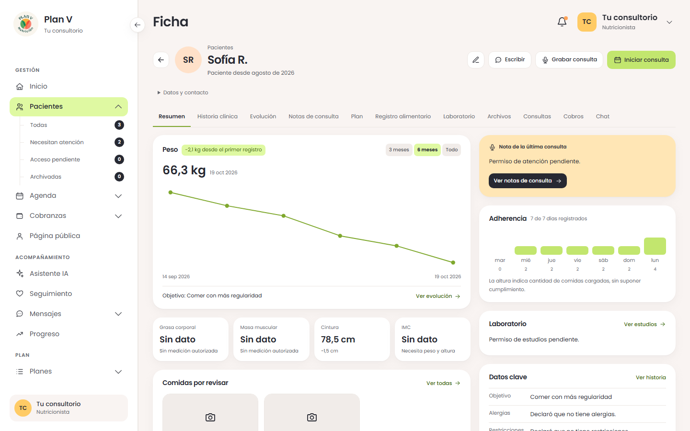
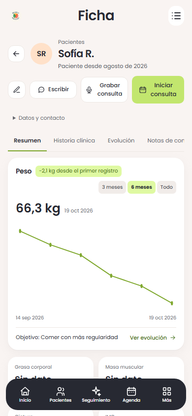

Ficha de paciente · fase 4
Las once pestañas de la ficha, conectadas a los datos y permisos existentes. El plan vigente se consulta antes de entrar al editor; notas, archivos, consultas y cobros conservan sus operaciones.
Abrir la ficha funcionando · Boceto aprobado completo · Informe de verificación
Demostración con datos ficticios locales. Los estados sin permisos son intencionales. No se inventan edades, metas numéricas de peso, rangos de laboratorio, asistencia ni respuestas de IA. La fase 5 está a cargo de otro carril y queda fuera de esta entrega.
Boceto aprobado · referencia navegable de composiciónImplementación · 1440 × 900
En el celular
Implementación · 390 × 844
Acciones verificadas con permisos locales
Nota manual guardada y resumen publicado; laboratorio con tres fechas ficticias y referencia original; visor privado con una imagen de prueba de 1 × 1 píxel. El ensayo retira Atención con el visor abierto y con una respuesta pendiente, y restaura los permisos al terminar.
Las cantidades y los datos difieren del boceto. Las tablas se desplazan dentro de su espacio en celular. La evidencia local no acredita llamada de audio real, proveedor de IA, lector de pantalla ni teléfono físico.